underappreciated

i love the cute comics and they styled the website in the same way.the little guinea pig dollhouse and the spooky zone are so freaking awesome
living inside of an analogue horror pc is such a vibe.
their art genuinely blows me away and i really empathised with e- in their written travels
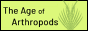
they make incredible reconstructive art of cambrian arthropods for wikipedia and have extremely charming gifs of them doing mundane activities littered around
cool celeste modder who's put a lot of mspaint charm into their site. the fun zone and 404 pages are definitely worth a visit
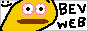
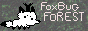
their oc pepper is so cool! i adore their sketchy and watercoloured drawings so much and i'll be sure to keep up with bug of the month
though new there's already a fun assortment of pages e.g a pasta recipe, banger video recs and hollow knight webring! it's made me want to add some sillier stuff here!
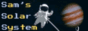
nearby

has an incredible layout which inspired my own and bursting with passioniate pages about biology and personal projects. i love the dithered images.
oozing with so much crunchy low poly charm! everything is presented in such a way that i want to CONSUME IT. i hope it gets some more updates
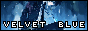
calm radio and soothing palette is so relaxing. i really enjoyed the lovely shrines and evocative poetry and wish them the best
unapologetically bleeding bright colours and dumb sfx at every turn. their art is so beautifully eclectic and they also host the rain ring!
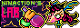

cycle ring neighbour whos website is buzzing with personality, style and rambles. the soundtrack here is also such a mood and they were the first person to link me :D)
fellow 2006 brit who gets obsessed with media. the website's early internet vibes really struck a chord with me and i'm eagerly awaiting the new site design


the ridiculous amount of graphics and glitter throughout tickles my brain and WOW THERE'S SO MANY UNIQUE SHRINES
the den of a grungy tired artist full of charm and style. i laughed my ass off at a certain shrine and the quiz and room tour were great
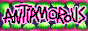
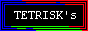
this site is genuinely just a point and click adventure at this point that's how polished it is. i'll let you experience it firsthand
the pastel os is very cute but the highlights here are the meticulously made shrines, sense of humour and charming achievement system
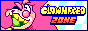
has a wonderfully obnoxious artstyle presenting an awesome bestiary, nostalgic shrines and fun quiz. i also learnt a bit more about clowns
fellow lego monkie kid enjoyer who has some really cool shrines and a massive backlog of articles. i found the discourse and culture ones very interesting
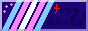
a fun mix of irony and sincerity in everything! i especially enjoy the aesthetics and content of the blog and shrine page and will definitely read their comic jack and aric.
the carribean tropical theming goes so hard. there's a LOT of pokemon stuff - challenge playthrough accounts and a big shrine but other games also get attention. i love their art and backstories for their characters in farming sims and dnd campaigns
off-grid
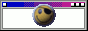
really awesome solaris vibe, hilarious 'guestbook', whimsical articles and a really fun secret to discover
graffiti, photography and the absurdly extensive cave system and dreamwiki here are incredibly cool
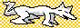
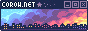
has a fun creature report for a made-up animal and some cool projects and media logs all wrapped up in a cute windows vibe
there's so much creativity here! i'm especially fond of their comics, claywork and encyclopedia of fantasy creatures
creators
(less extensive but whimsical sites from people i follow elsewhere)
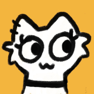
hyperrouter and freeline dev! kind of a linktree but it's a piss yellow y2k mock desktop
500 caliber contractz dev! uses their signature style and has a little shrine for the making of their first game

wild cosmos dev! has some cool art, blog posts on graphics and project retrospectives
surmount and bibidi bibidi dev! cool minimalist interface with some great think pieces and game design articles (more on substack)


castle on the coast dev! has some really good articles analysing 3D platformer design
psychonauts modder - the blog details fascinating reverse engineering discoveries

chill monochromatic game video essay maker. has a small blog and some projects showcased
cool nintendo modder/reverse engineer. has deep dives into some of that and related projects

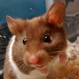
cracked dev of veloren and the super mario 64 GBA port. plenty of nerdy blog posts about programming and
RAWR XD humour animator. has an active ask box and some fun webtoys and games

garbanzo quest and super debt dev! big fan of their art and commentary on the music page is an interesting read
fun

what more can i say but hogs? famous hogs, false hogs, hog decor, hog memes but also some personal stuff
full of extremely charming fungi ascii art. a very relaxing stroll/scroll through the woods
more to come as i explore more of the indie web...